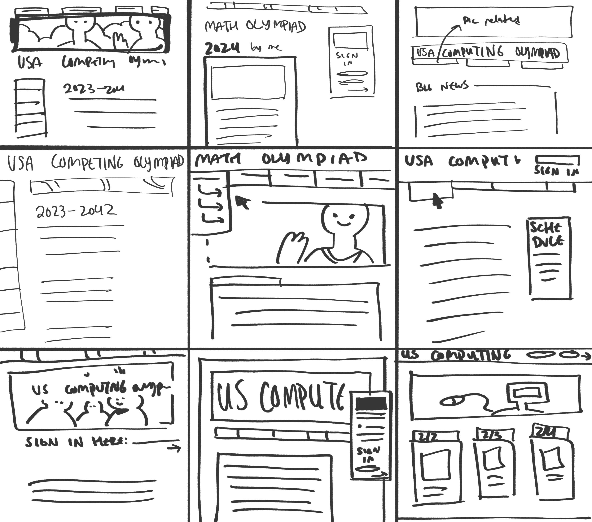
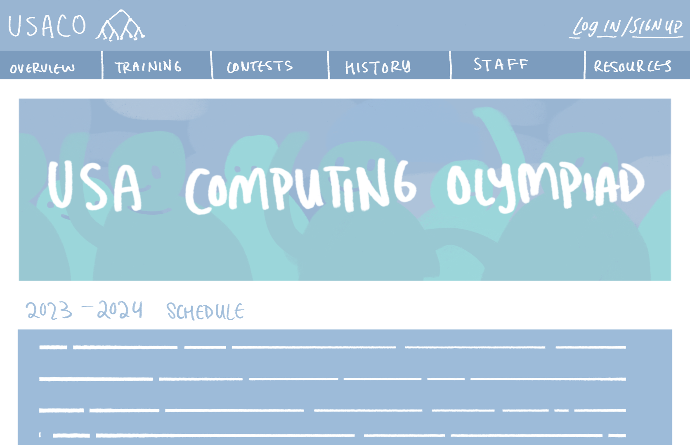
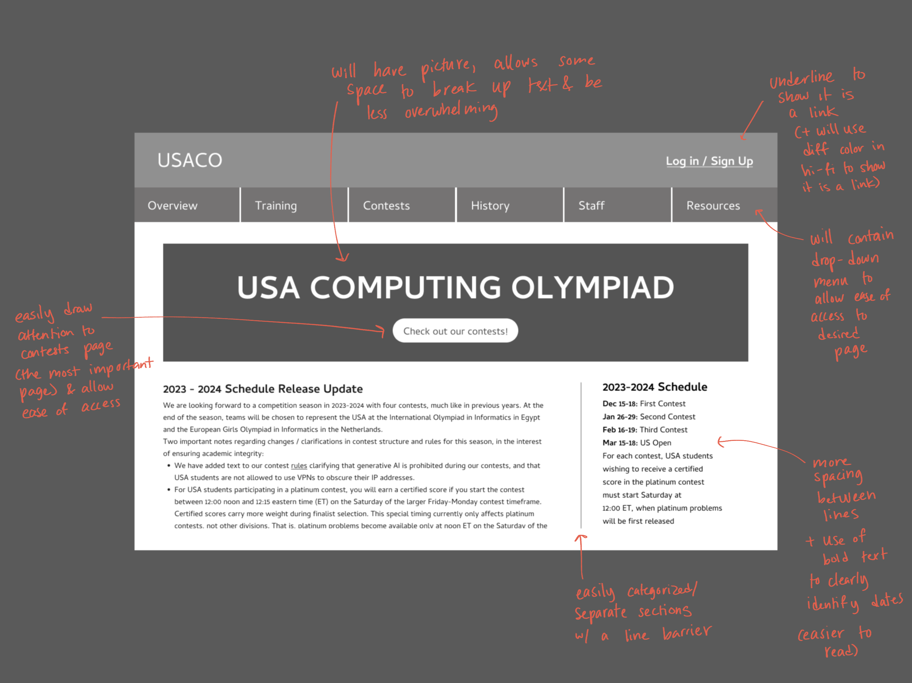

USACO Responsive Redesign
Conxtext
Itching to stretch my web-redesign muscles, I was on the hunt for a website that not only needed a visual update, but was also actually relevant to me and my peers. After asking around, my friend led me to the
USA Computing Olympiad website -- he had participated in one of their contests when he was younger but the outdated design of their site always stuck with him.

Because many young adults/teenagers would be using the site as a means of looking at contests to enter, I wanted to redesign the website not only for accessibility but also to be inviting while easy to navigate.
Some immediate pain points I wanted to address included:
After taking a look, I agreed - the font and overall brand is very simplistic but without any real personality, the paragraph’s line spacing is small and makes the text difficult to read, and the separation of content is difficult to discern at a first glance.
- Increasing spacing and readability for wider accessibility
- Providing a better text or layout hierarchy for easier understandability
- Providing a more memorable color scheme and layout for brand identity
Sketches
First, I started with some quick sketches of potential redesign layouts.
Again, I wanted to prioritise a clean, yet appealing design. For the final sketch I chose a light blue to match their original color scheme, but chose something brighter to encourage the younger audience and integrated it more thoroughly into the layout.


Low-Fidelity Wireframing
From there, I did a quick lo-fi wireframe in Figma, annotating for the changes I implemented and how they'd address the issues of the original USACO website.

Style Guide
As I start defining my design, I first develop a style guide to have a consistent font, size, and color scheme in my layouts. I chose a cool, blue and green color scheme in order to maintain the scientific-tech aesthetic, but hopefully in a way that seems more approachable than the gradients and greys of the existing page.
I also used JetBrains Mono as the key font, which has a pre-existing association with programming and tech, but isn't distinct enough to be offsetting.

High-Fidelity Designs
Now I add color and images to the designs, so I can get a look at what I image the final product to look like.

Because this webpage is also intended to be responsive, I've designed prototypes to adapt the webpage to different dimensions.
Final Redesign
Finally, you can find the link to my redesign
here.
This project was my first time being involved in both the front end and the back end -- this helped me not only gain a deeper understanding on how to balance both my artistic vision and my HTML/CSS skills, but also encouraged me to thoughtfully consider my audience as I design: both in terms of their visual appeal, but also on what platforms they'd be viewing the site on.